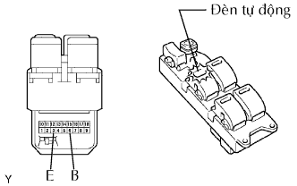

CÔNG TẮC CHÍNH CỬA SỔ ĐIỆN > KIỂM TRA |
| 1. KIỂM TRA CỤM CÔNG TẮC CHÍNH ĐIỀU KHIỂN CỬA SỔ ĐIỆN |
Đo điện trở của công tắc chính.
| Tình trạng công tắc khoá cửa sổ | Tình trạng công tắc điện | Nối dụng cụ đo | Điều kiện tiêu chuẩn |
| Luôn luôn (ON / OFF) | LÊN | 3 (E) - 9 (DD) 4 (DU) - 6 (B) | Dưới 1 Ω |
| Luôn luôn (ON / OFF) | OFF | 3 (E) - 4 (DU) 3 (E) - 9 (DD) | Dưới 1 Ω |
| Luôn luôn (ON / OFF) | XUỐNG | 3 (E) - 4 (DU) 6 (B) - 9 (DD) | Dưới 1 Ω |
| Luôn luôn (ON / OFF) | XUỐNG TỰ ĐỘNG | 3 (E) - 4 (DU) 6 (B) - 9 (DD) | Dưới 1 Ω |
| Tình trạng công tắc khoá cửa sổ | Tình trạng công tắc điện | Nối dụng cụ đo | Điều kiện tiêu chuẩn |
| OFF | LÊN | 3 (E) - 15 (PD) 6 (B) - 18 (PU) | Dưới 1 Ω |
| OFF | OFF | 3 (E) - 18 (PU) 3 (E) - 15 (PD) | Dưới 1 Ω |
| OFF | XUỐNG | 3 (E) - 18 (PU) 6 (B) - 15 (PD) | Dưới 1 Ω |
| ON | LÊN | 3 (E) - 15 (PD) | 10 kΩ trở lên |
| 6 (B) - 18 (PU) | Dưới 1 Ω | ||
| ON | OFF | 18 (PU) - 15 (PD) | Dưới 1 Ω |
| ON | XUỐNG | 3 (E) - 18 (PU) | 10 kΩ trở lên |
| 6 (B) - 15 (PD) | Dưới 1 Ω |
| Tình trạng công tắc khoá cửa sổ | Tình trạng công tắc điện | Nối dụng cụ đo | Điều kiện tiêu chuẩn |
| OFF | LÊN | 3 (E) - 13 (RLD) 6 (B) - 12 (RLU) | Dưới 1 Ω |
| OFF | OFF | 3 (E) - 12 (RLU) 3 (E) - 13 (RLD) | Dưới 1 Ω |
| OFF | XUỐNG | 3 (E) - 12 (RLU) 6 (B) - 13 (RRD) | Dưới 1 Ω |
| ON | LÊN | 3 (E) - 13 (RLD) | 10 kΩ trở lên |
| 6 (B) - 12 (RLU) | Dưới 1 Ω | ||
| ON | OFF | 12 (RLU) - 13 (RLD) | Dưới 1 Ω |
| ON | XUỐNG | 3 (E) - 12 (RLU) | 10 kΩ trở lên |
| 6 (B) - 13 (RLD) | Dưới 1 Ω |
| Tình trạng công tắc khoá cửa sổ | Tình trạng công tắc điện | Nối dụng cụ đo | Điều kiện tiêu chuẩn |
| OFF | LÊN | 3 (E) - 16 (RRD) 6 (B) - 10 (RRU) | Dưới 1 Ω |
| OFF | OFF | 3 (E) - 10 (RRU) 3 (E) - 16 (RRD) | Dưới 1 Ω |
| OFF | XUỐNG | 3 (E) - 10 (RRU) 6 (B) - 16 (RRD) | Dưới 1 Ω |
| ON | LÊN | 3 (E) - 16 (RRD) | 10 kΩ trở lên |
| 6 (B) - 10 (RRU) | Dưới 1 Ω | ||
| ON | OFF | 10 (RRU) - 16 (RRD) | Dưới 1 Ω |
| ON | XUỐNG | 3 (E) - 10 (RRU) | 10 kΩ trở lên |
| 6 (B) - 16 (RRD) | Dưới 1 Ω |
|  |
Cấp điện áp dương ắc quy vào công tắc chính và kiểm tra rằng đèn AUTO sáng lên.
| Điều kiện đo | Điều kiện tiêu chuẩn |
| Cực dương ắc quy (+) → Cực 6 (B) Cực âm ắc quy (-) → Cực 3 (E) | Đèn AUTO sáng |